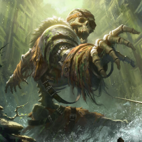
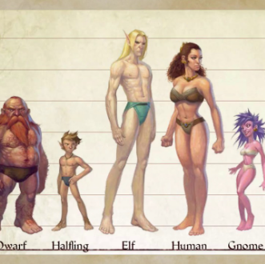
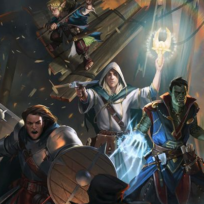
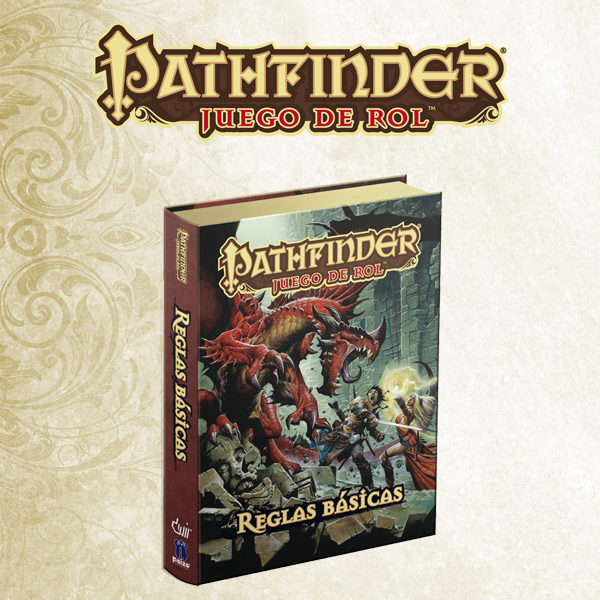

Aventuras
Pathfinder cuenta con cientas de aventuras para disfrutar con
tus aventureros, desde exploracion de ruinas milenarias hasta
ciudades gigantes donde la magia y la técnologia conviven para
hacer la vida de sus ciudadanos mas sencillas. Descubre lo que
hay alla afuera.
Razas
La selección de raza posiblemente sea el paso más importante que
cualquier héroe debe tomar para empezar su aventura, no hay
vuelta atrás y la selección de la misma determinará la evolución
de tu personaje, siempre y cuando sobreviva a la siguiente
campaña.


Clases
Las clases representan profesiones escogidas que adoptan los
personajes y algunas otras criaturas. Las clases proporcionan
una amplia variedad de modificadores, que permiten a los
personajes llevar a cabo acciones que de otro modo no podrían.
Reglas
Pathfinder es una evolución de las reglas 3.5 del más famoso
juego de rol de la historia, actualizadas a partir de las
aportaciones de más de 50.000 jugadores. Los jugadores sólo
necesitan este manual de 576 páginas para jugar.
